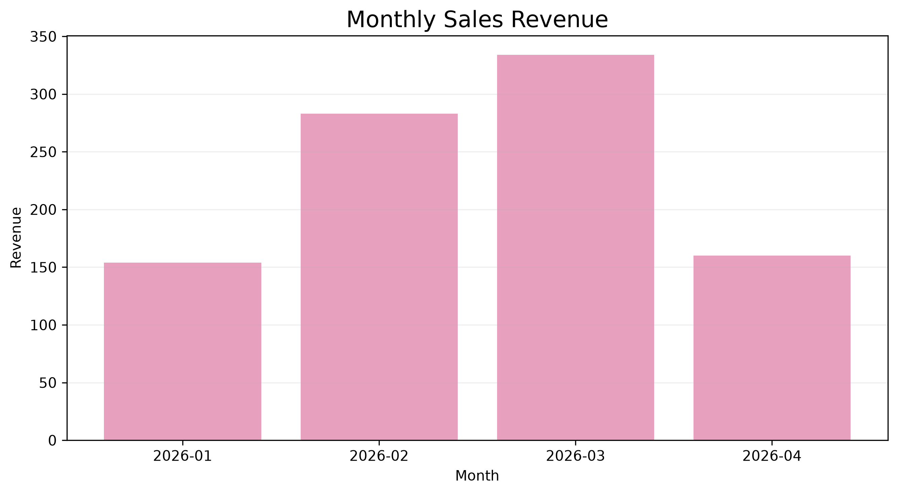
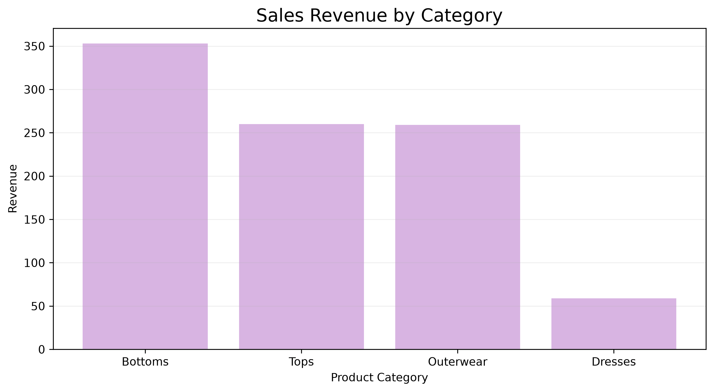
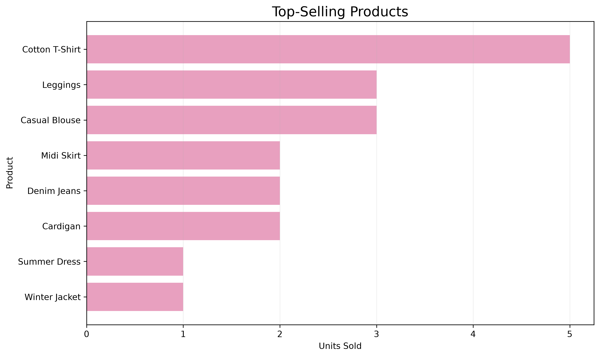
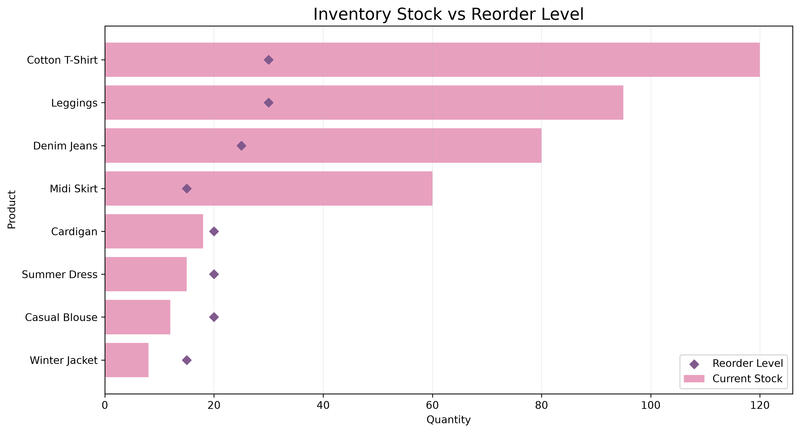

Retail Sales & Inventory Analysis
Tools: Oracle SQL · Python · Pandas · Matplotlib
Project Overview
This project analyzes retail sales, product performance, and inventory levels using sample retail data.
The objective is to identify sales trends, top-selling products, and inventory replenishment needs to support business decisions.
1. Monthly Sales Analysis

Analysis
This chart presents monthly sales performance and helps identify revenue trends over time.
Business Application
Monthly sales reporting supports performance monitoring and purchasing decisions.
2. Sales by Category

Analysis
This chart compares sales performance across different product categories.
Business Application
Category-level reporting helps businesses understand product performance and support merchandising strategies.
3. Top-Selling Products

Analysis
This chart identifies products with higher sales quantities.
Business Application
Understanding product demand supports inventory planning, purchasing, and product assortment decisions.
4. Inventory Analysis

Analysis
This chart compares current inventory stock with predefined reorder levels.
Business Insights
Four products have stock levels below their reorder thresholds: Winter Jacket, Casual Blouse, Summer Dress, and Cardigan.
Business Recommendation
Review replenishment requirements for these products to reduce potential stockout risks.
5. Source Code
The complete project includes Oracle SQL scripts, sample retail data, Python visualization code, and analysis outputs.
View Complete Project on GitHub →